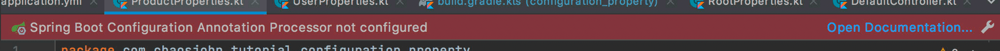
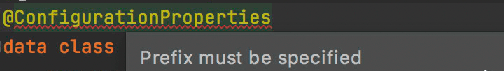
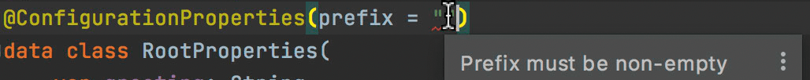

欢迎转载，但请在开头或结尾注明原文出处【blog.chaosjohn.com】
背景
SpringBoot + kotlin
在 SpringBoot 项目中，我们经常在配置文件application.properties 或 application.yml 中存放配置参数。
网上很少有 kotlin 版本的使用教程/案例，所以就有了本文
简单场景: @Value
如果只是偶尔在业务中获取一下配置值，可以使用 @Value 注解
1 | @Value(value = "\${server.port}") |
需要用的地方，调用 port 变量直接就能访问配置文件中的 server.port 值
使用 @ConfigurationProperties
环境准备: 开启 annotationProcessor
如果不开启的话，IDEA 则会提示报错 Spring Boot Configuration Annotation Processor not configured 
所以，在 build.gradle.kts 文件的 dependencies 块里添加以下行
1 | dependencies { |
在 Preferences -> Build, Execution, Deployment -> Compiler -> Annotation Processors 中将 Enable annotation processing 勾选上
示例 application.yml
1 | server: |
@ConfigurationProperties 配置 prefix
如果不指定 prefix，IDEA 会提示警告 Prefix must be specified 
对于 greeting，它的 prefix 为 空，但是如果指定为 空字符串 的话 IDEA 又会提示报错 Prefix must be non-empty 
所以建议使用 多级配置，类似于
1 | user: |
对于 name/gender/age，其 prefix 为 user
激活 @ConfigurationProperties
以 UserProperties类 举例，假设它的包名为 com.chaosjohn.tutorial.configuration_property，如何让 Spring 知道该类的存在呢？
有以下几种方法：
- 增加注解
@ConfigurationPropertiesScan - 增加注解
@EnableConfigurationProperties(value = [UserProperties::class]) - 在类上增加注解
@Component - 在
@Configuration注解的类内手动创建@Bean
采用 class 作为 Properties 类
1 | @ConfigurationProperties(prefix = "product") |
参数可以给定默认值进行初始化，但生成 Bean 时，会自动从配置文件读入参数值，除此以外：
- 对于非基本类型，可以用
lateinit来延迟初始化 - 对于基本类型（Primitive Type，比如
Int/Double/Boolean），可以选用by Delegates.notNull<>()
采用 data class 作为 Properties 类
1 | @ConstructorBinding |
注意：
@ConstructorBinding必不可少
data class无法手动生成Bean
使用
通过构造函数传入
1
2
3
4@RestController
class Controller(val userProperties: UserProperties) {
...
}通过注解
@Autowired注入1
2
3
4
5
6
7
8@RestController
class Controller {
@Autowired
lateinit var userProperties: UserProperties
...
}
关于 JSR303 验证
亲测无法用于 data class